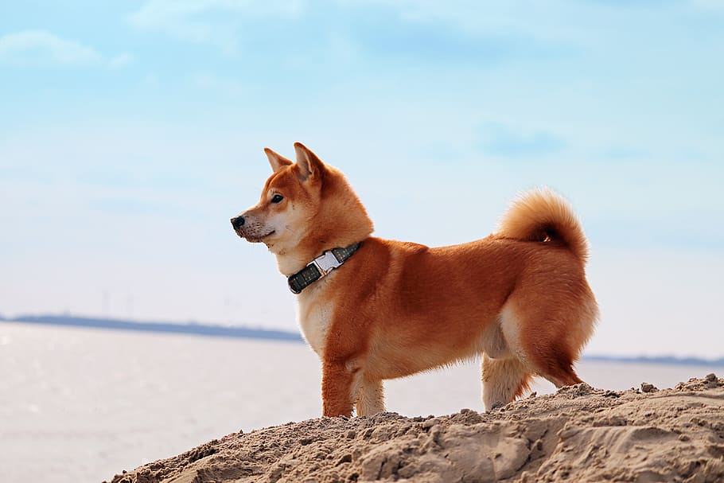
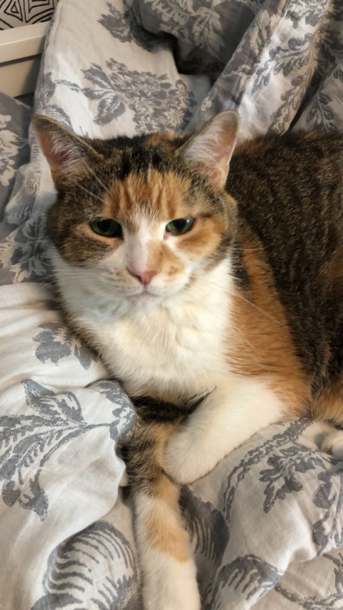
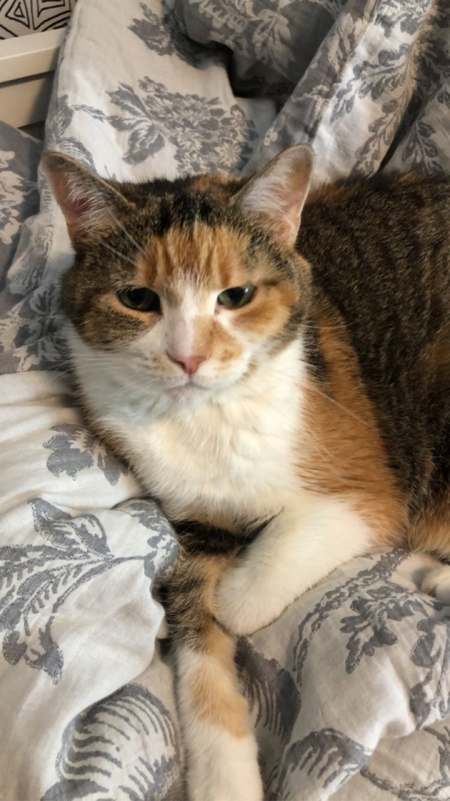
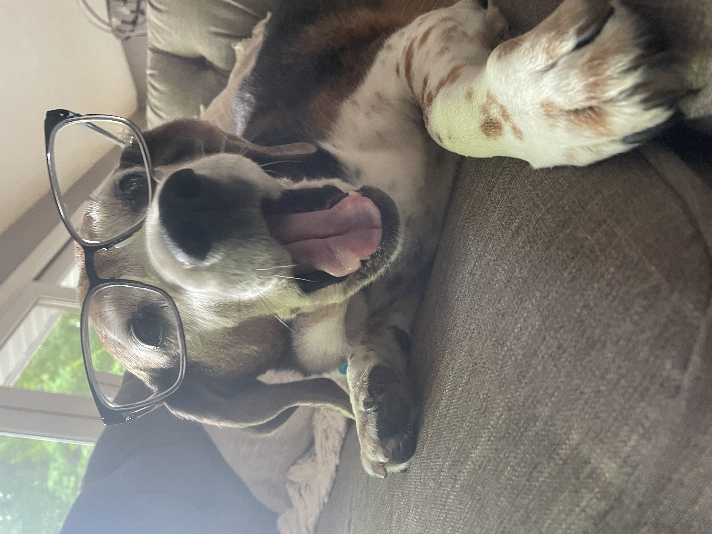

Pets
Bacon Q Dog

Bacon Q. Dog is a 9yr old labradoodle. He prefers to spend his days lounging among the three different beds/couches that his family has gifted him. He enjoys a walk or two around the neighborhood, as long as he can pretend that he doesn't see any of the other animals to avoid the embarrassment of not wanting to admit he has no wolf-like skills in chasing them.
At night just as the rest of the family is ready to relax, Bacon suddenly wants to release all of his energy. He will place his toys on a mini couch and frantically drag the couch around, giving his toys "a ride." There is also a lot of rolling. Lots and lots of rolling.
Photo Gallery


Likes
- Belly rubs
- Playing tug-of-war
- Sneaking onto the couch
Biscuit
Biscuit is a 2 year old shiba inu dog. Shiba inus are energetic and playful dogs. Biscuit enjoys running outside in circles and then laying down in the grass in the sun for hours. He also likes going for occasional swims.
As energetic as Biscuit is, he also likes to relax. He loves to sleep in his dog bed and watch Netflix with his owners. His favorite treat is apples.
Photo Gallery
Likes
- Going for walks
- Swimming
- Apples
Lucy

Lucy is a 17-year-old calico that I've had since I was 5, she has pretty much grown up with me my whole life. Even though she's old she's still kickin' it and enjoys running around the house at 4am.
Her favorite foods include anything but her kibble. She enjoys sunbathing and long naps, along with lots of petting. However, she hates getting her stomach rubbed.
Photo Gallery


 

Likes
- Sleeping
- Food
- Her bed
Rosie
Rosie is a small but super energetic dog. Whenever someone comes to the house she is very quick to run up and greet them. She loves to play fetch and will not leave you alone with her toys as she begs you to play with her.
Rosie is also a wonderful lap dog. If you sit on the couch she is quick to find a spot next to you. If you wear a blanket over your legs, you’ll find her laying on your legs. She loves to cuddle and loves to be pet so she will always be right up on you.
Photo Gallery
Likes
- Treats
- Fetch
- Cuddles
Sofie
Sofie is a 15-year-old Beagle mix. Her favorite spot in the house is the living room couch. She loves to go outside, sometimes too much, leaving us to open the door for her constantly. Sofie loves freshly cut grass, she rolls around in it for hours after it gets cut.
Sofie is very old, she joined our family when I was still in a car seat. Sofie loves the weekends because she gets her favorite treat, a fried egg. Sofie loves long walks around the lake or on the trail, where she can be let free to run to her hearts content.
Photo Gallery
Likes
- Fried eggs
- Peanut butter
- bacon strips